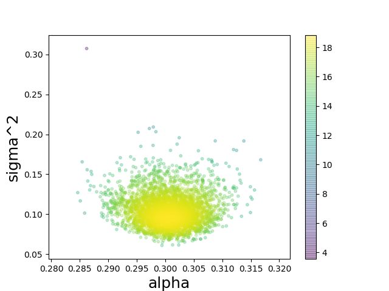

Python interface of TMCMC
Module tmcmc implements the TMCMC (Transitional Markov-Chain Monte Carlo) algorithm.
We use the C implementation of the algorithm and the ctypes wrapper module for calling it from Python. Since the function we are sampling from is also written in Python, we use embedded Python to call the function from the C code and numpy to pass arguments between the two environments.
TMCMC
The Python interface of TMCMC is defined as follows:
def tmcmc(fitfun, dim=2, maxstages=20, popsize=1024, lowerbound=[-6,-6], upperbound=[6,6], id=0):
Inputs:
- fitfun: python script name (without the .py extension) that implements the log-likelihood function. The prototype is: fitfun(x, dim), where x is a vector of parameter values and dim the number of parameters.
- dim: number of parameters
- maxstages: maximum number of stages that can be performed by the TMCMC algorithm
- popsize: number of samples per stage
- lowerbound: lower bound for each parameter
- upperbound: uppoer bound for each parameter
- id: integer identifier for the specific tmcmc() call. The value is appended to the output files generated by the algorithm.
Outputs:
- The tmcmc function returns the log-evidence of the model.
- In addition, for each stage of the algorithm, the evaluation points and their log-likelihood are stored in text files named as curgen_db_xxx_yyy.txt, where xxx: id of the tmcmc() call, and yyy: stage of the algorithm.
Fitness function
The fitness function typically computes the model output and returns the log-likelihood of the data.
def fitfun(theta, dim):
- theta: parameters of the model
- dim: number of parameters
Plotting
2D scatter plots of the samples stored in the output text files, colored according to their log-likelihood values, can be produced by means of the plot_gen() function.
def plot_gen(filename, dim=2, i=1, j=2, show=1, save=0):
- filename: curgen_db_xxx_yyy.txt file
- dim: number of parameters
- i: i-th parameter
- j: j-th parameter
- namei: label for the i-th parameter
- namej: label for the j-th parameter
- show: depict the plot on the screen
- save: save the plot in a png file (filename.png)
Example
demo3.py
# Import necessary modules import sys sys.path.append("../lib_python") from tmcmc import * from plot_gen import * logEv=tmcmc("fitfun3",dim=2,maxstages=20,popsize=4096,lowerbound=[-10,-10],upperbound=[10,10],id=3) print("logEv=",logEv[0]) plot_gen('curgen_db_003_009.txt', dim=2, i=1, j=2, namei='alpha', namej='sigma^2', show=1, save=0)
fitfun3.py
# data-driven inference # underlying data model: y = ax + e, where # a=0.3 and e=N(0,sigma^2), sigma=0.1 import numpy as np import math def fitfun3(theta, dim): a = theta[0] sigma = theta[1] data = np.loadtxt('data3.txt') N=data.shape[0]; x = data[:,0] dy = data[:,1] y = a*x; SSE = np.sum((y-dy)\*\*2) sy=sigma; logn = -0.5*N*math.log(2*math.pi)-0.5*N*math.log(sy*sy)-0.5*SSE/(sy*sy) return logn
Installation and testing
Prerequisites
Make sure that the following required software has been installed.
- GCC compiler
- Python 2.7 (or higher)
- Python-devel package
python2-configorpython3-configmust be available- MacOS: automatically available if python has been installed with brew
- Python numpy package
- MacOS:
pip2 install numpyorpip3 install numpy
- MacOS:
- Python matplotlib package
- MacOS:
pip2 install matplotliborpip3 install matplotlib
- MacOS:
- GNU GSL library
- MacOS:
brew install gsl - We also provide the option to download and use a local copy of the GSL library
- MacOS:
Installation steps
1. Download from GitHub:
git clone https://github.com/cselab/pi4u.git pi4u-tmcmc -b tmcmc
If you do not have git, download pi4u-tmcmc.zip from here: GitHub download link
2. Go to pi4u-tmcmc/src and build the TMCMC library:
cd pi4u-tmcmc/src; make
cd .. (go back to the pi4u-tmcmc directory)
Testing - Running the demo
1. Go to pi4u-tmcmc/demo_python and run demo3.py
cd demo_python; python2 demo3.py
2. The scatter plot of samples for our example should be as follows:

Troubleshooting and additional options
How to build the software using a local copy of the GSL library
1. Go to pi4u-tmcmc/gsl and run build.sh:
cd pi4u-tmcmc/gsl; ./build.sh
cd .. (go back to the pi4u-tmcmc directory)
2. Go to pi4u-tmcmc/src and build the TMCMC library:
cd src; make -B mygsl=1
How to build the software using python3
1. Go to pi4u-tmcmc/src and (re)-build the TMCMC library:
make -B python3=1
cd .. (go back to the pi4u-tmcmc directory)
2. Go to demo_python and run demo3.py using python3
cd demo_python; python3 demo3.py